La dimensión es una idea razonable
La intuición funciona bastante bien. Podemos imaginar la dimensión de un objeto como el número de direcciones independientes en las que podríamos movernos sobre él:
- En un punto, no hay movimiento posible, estamos “atrapados” y obligados a quedarnos sobre él. Por tanto, se dice que el punto tiene dimensión 0.
- Si dibujamos una línea recta, sólo podemos movernos a lo largo de ella, hacia delante o hacia atrás, pero siempre en la propia línea, no hay más direcciones disponibles. Entonces, se dice que la línea tiene dimensión 1.
- En una hoja de papel, podríamos movernos a lo largo de dos direcciones (el largo y el ancho), y por tanto, su dimensión es 2.
- Si pudiéramos caminar por las paredes de nuestra casa, tendríamos tres opciones independientes de movimiento (largo, ancho y alto). En ese caso, su dimensión es 3.
Lo que describimos aquí es, en esencia, la motivación de la definición matemática de dimensión topológica. Esta forma de medir siempre nos va a devolver números enteros, y funciona a la perfección para las figuras de la geometría clásica. Pero no es la única forma que los matemáticos han encontrado para determinar la dimensión de un objeto.
El arte de fotocopiar y cambiar de escala
Intuitivamente, un objeto de mayor dimensión “ocupará más” el espacio que uno de dimensión menor. Para simplificar la discusión, vamos a considerar objetos autosimilares, que son aquellos formados por copias idénticas de sí mismos a escalas más pequeñas. En este contexto, resulta natural estudiar cómo cambia el objeto cuando modificamos su tamaño. La pregunta es: ¿cuántas copias del objeto original son necesarias para reconstruir una versión reescalada del mismo?
Supongamos que duplicamos el tamaño de los objetos que ya conocemos (factor de escala \(S=2\)):
- si duplicamos el tamaño de un segmento de longitud \(\ell\), necesitamos \(N = 2\) copias del segmento original para construir el nuevo segmento,
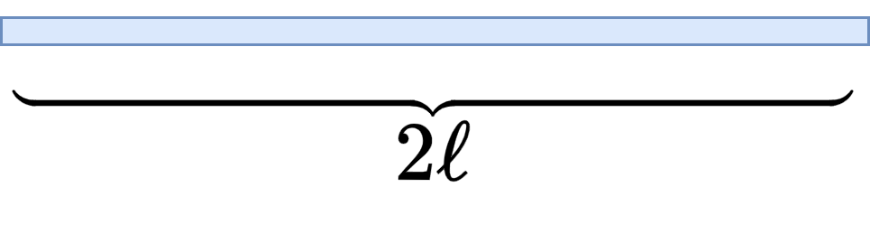
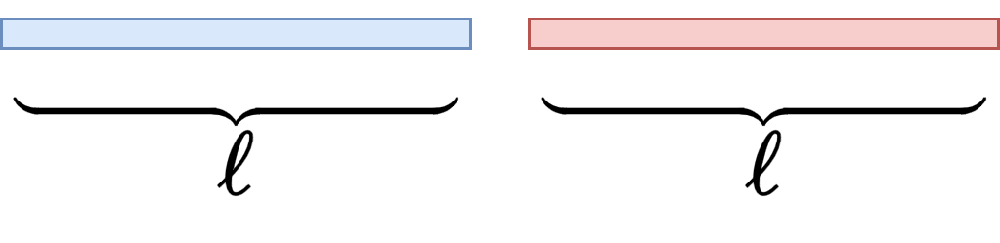
donde se verifica
- Si duplicamos los lados de un cuadrado, su área se multiplica por 4, y necesitaríamos \(N = 4\) copias del cuadrado original para reconstruir el cuadrado reescalado, cumpliéndose que \(4 = 2^2\).
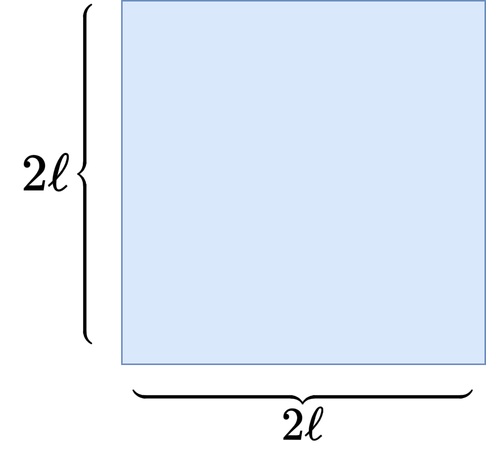
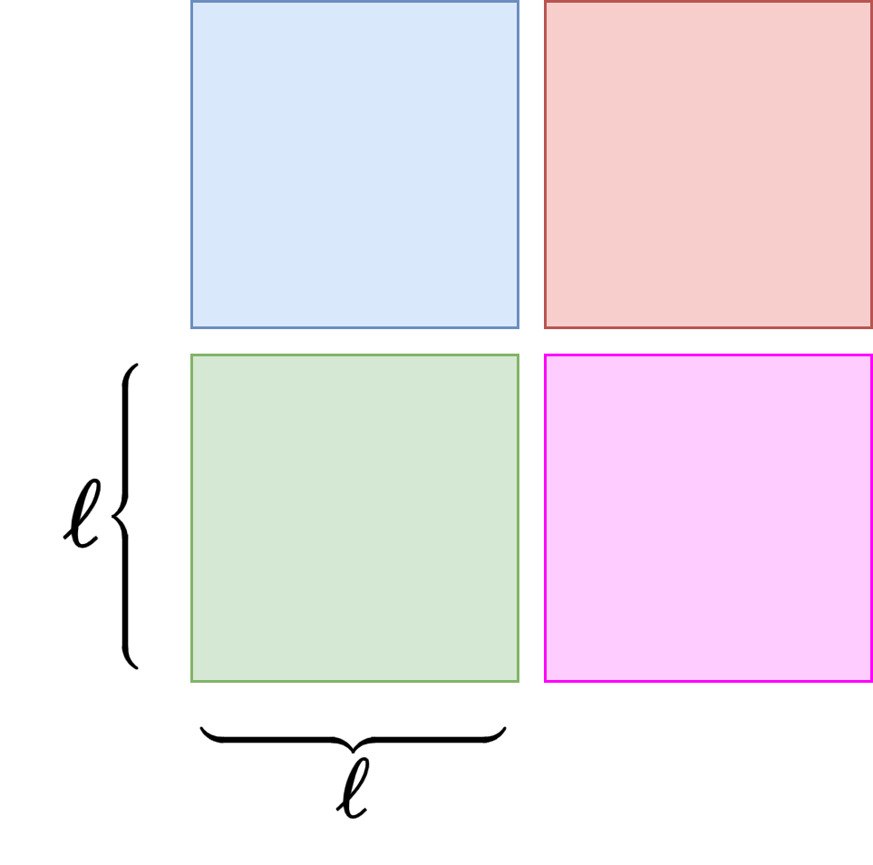
- Análogamente, si duplicamos los lados de un cubo, necesitamos \(N = 8\) cubos originales para formar el nuevo cubo, tal que \(8 = 2^3\).
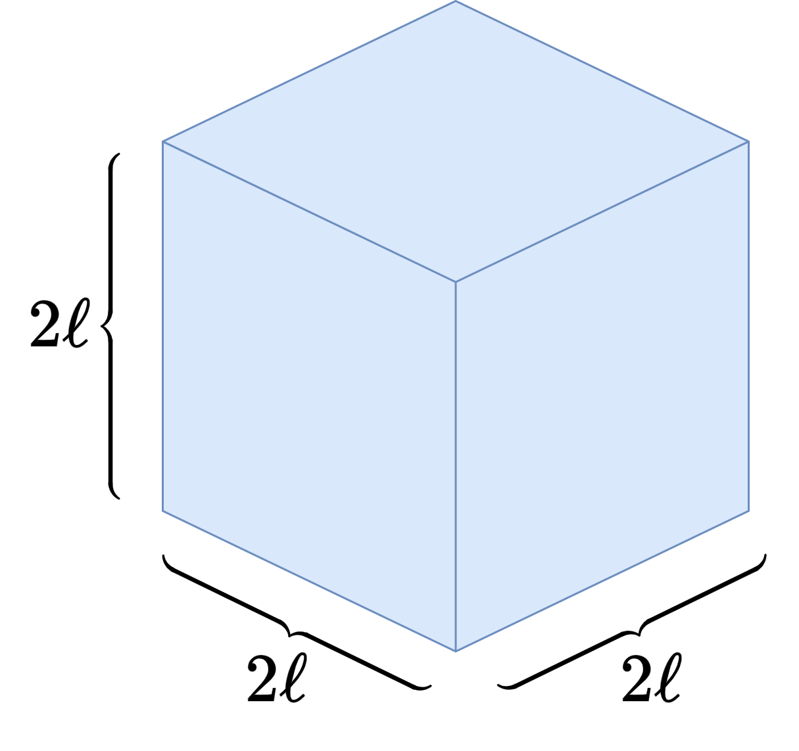
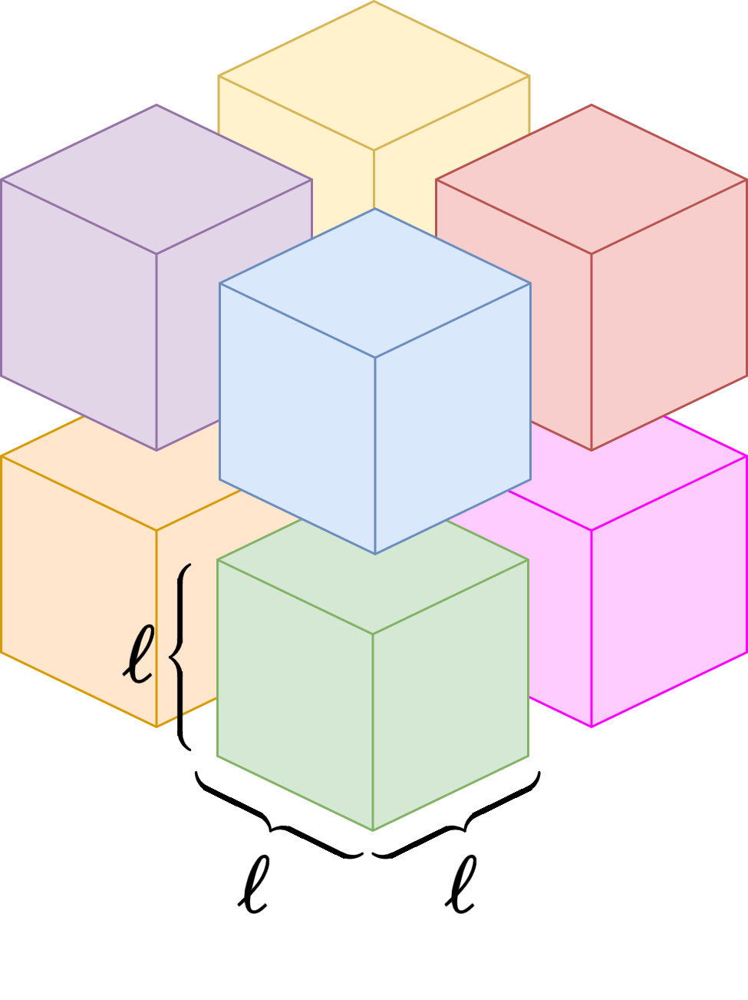
Aquí parece esconderse un patrón. De manera general, para objetos autosimilares, la dimensión (de similaridad) \(d\) es el número que verifica
donde \(S\) es el factor de escala y \(N\) es el número de copias que necesitamos para reconstruir el objeto reescalado. Podemos despejar \(d\) tomando logaritmos en la expresión anterior, obteniendo
Quizá la dimensión no tiene por qué ser entera
Para los casos de un segmento, un cuadrado y un cubo, el valor de \(d\) obtenido según la fórmula anterior coincide con su dimensión topológica, obteniendo \(d=1,2,3\), respectivamente. Sin embargo, si miramos la fórmula con atención, nos damos cuenta de que \(d\) está definida como un cociente de logaritmos, lo que matemáticamente significa que ¡\(d\) puede ser cualquier número real positivo! ¿Qué sentido tiene esto? ¿Debe ser la dimensión siempre un número entero?
Veámoslo con un ejemplo un poco más exótico. Imagina un triángulo equilátero en el plano. Ahora, imagina que lo divides en cuatro triángulos iguales y eliminas el triángulo invertido del centro, dejando tres triángulos más pequeños. ¿Fácil, verdad? ¿Pero qué sucede si volvemos a repetir el proceso sobre los tres triángulos restantes? Cada triángulo se divide en cuatro y le quitamos el triángulo central. ¿Y si volvemos a repetir el proceso sobre los triángulos resultantes? Una vez, otra vez, y otra… así infinitas veces. Acabamos de construir el famoso triángulo de Sierpinski:
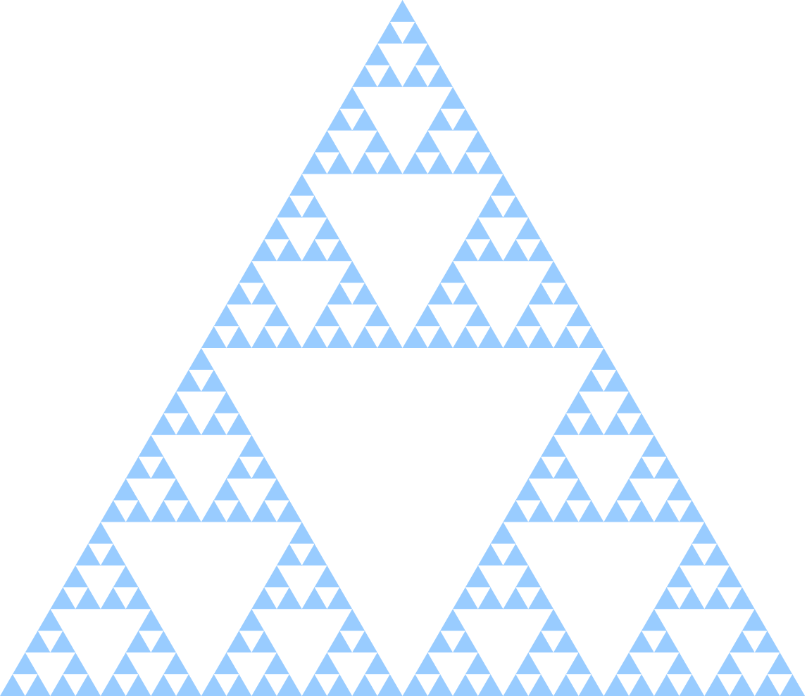
¿Qué hemos obtenido? El resultado es una figura que está contenida en el plano, formada con infinitos triángulos y a su vez con infinitos agujeros. Si vive en el plano, ¿”debería” ser bidimensional? Pero al mismo tiempo estamos quitando área constantemente, y si continuamos infinitamente, el área total termina siendo cero. Es un objeto del plano (necesitamos dos ejes para representarlo)… pero sin área, ¿qué es realmente este objeto?
Las matemáticas nos dicen que su dimensión topológica es 1. Esto puede entenderse intuitivamente ya que, debido a su estructura autosimilar con huecos a todas las escalas, se comporta más como una red de segmentos conectados que como una superficie. Pero, por alguna razón, el triángulo de Sierpinski parece algo más que una línea…
Calculemos ahora su dimensión de similaridad, con la noción que introdujimos antes.
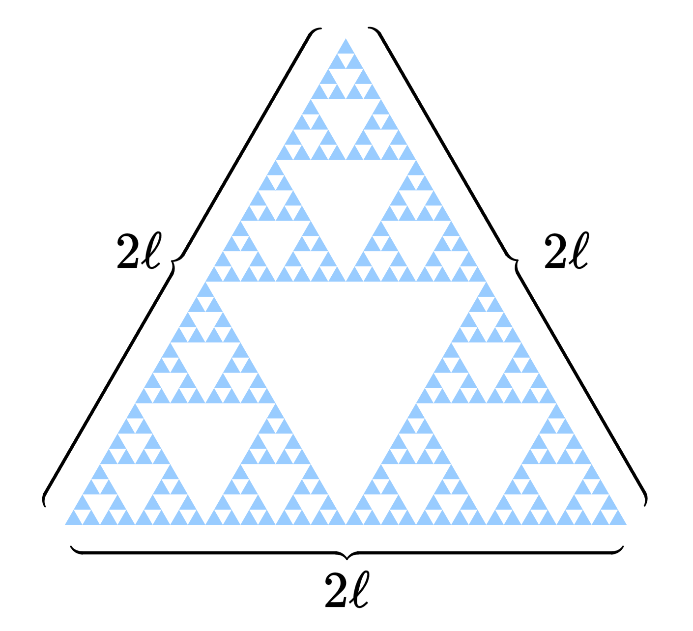
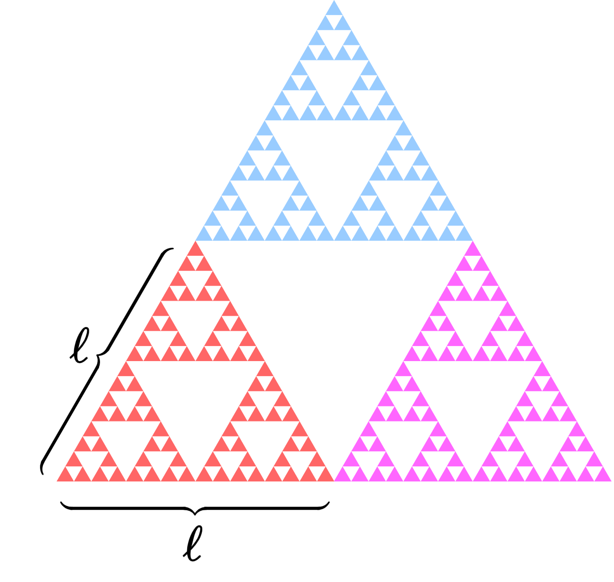
Si duplicamos el tamaño del triángulo de Sierpinski (\(S = 2\)), sólo necesitamos \(N=3\) copias del triángulo original para reconstruir el nuevo, lo que proporciona una dimensión de
¿Qué está pasando? La dimensión no es \(1\) ni \(2\), ¡es un número con decimales, \(1.58\)! El objeto se ha vuelto demasiado rugoso para ser una línea, pero está demasiado vacío para rellenar un plano. Es un objeto que simplemente vive entre las dos dimensiones, un híbrido geométrico, un triángulo con dimensión fraccionaria. ¿Pero cómo es esto posible? Esta fascinante paradoja geométrica fue la que impulsó al matemático Benoît Mandelbrot a desarrollar una nueva disciplina: la geometría fractal.
Analicemos otro ejemplo bastante conocido. Partimos de un segmento, que dividimos en tres partes iguales y en el que sustituimos el tercio central por dos lados de un triángulo equilátero. Si repetimos esta operación infinitamente en cada segmento resultante, obtenemos la curva de Koch. Al unir tres de estas curvas, obtenemos una figura cerrada que se asemeja a un copo de nieve, es el copo de nieve de Koch.
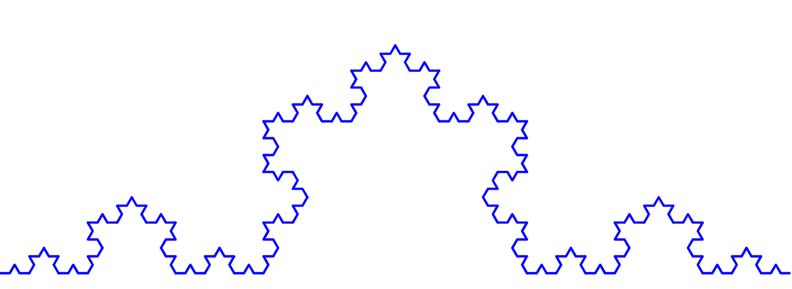
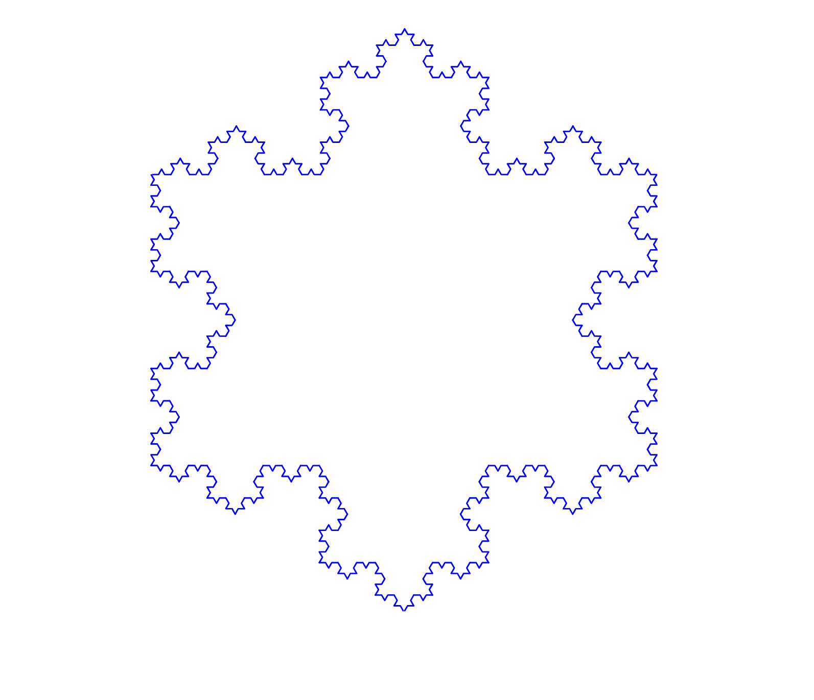
Este objeto encierra un área finita, pero posee un perímetro irregular infinito; es decir, podrías pintar su interior, pero no dibujar su borde. Se anima al lector a comprobar que la dimensión de la curva de Koch (y, por tanto, del copo de nieve) es \(d=\frac{\ln 4}{\ln 3}\approx 1.26\).
Fractales en nuestro día a día
El truco de contar “copias” funciona bien para estructuras autosimilares, pero no todos los conjuntos pueden describirse como combinación de partes idénticas a sí mismos. Para generalizar esta idea, se introduce la dimensión de Hausdorff, que esencialmente estudia cómo los objetos llenan el espacio. Cuando la dimensión de Hausdorff de un objeto es mayor que su dimensión topológica (entre otras propiedades), hablamos de un fractal.
Si observamos atentamente, vemos que el mundo real es profundamente fractal. La naturaleza parece tener una obsesión con ellos: desde las ramas de los árboles, en diversos tipos de plantas y alimentos, los bronquios de tus pulmones, los rayos, los ríos, pompas de jabón… incluso hasta algunas formaciones galácticas muestran patrones fractales aproximados.
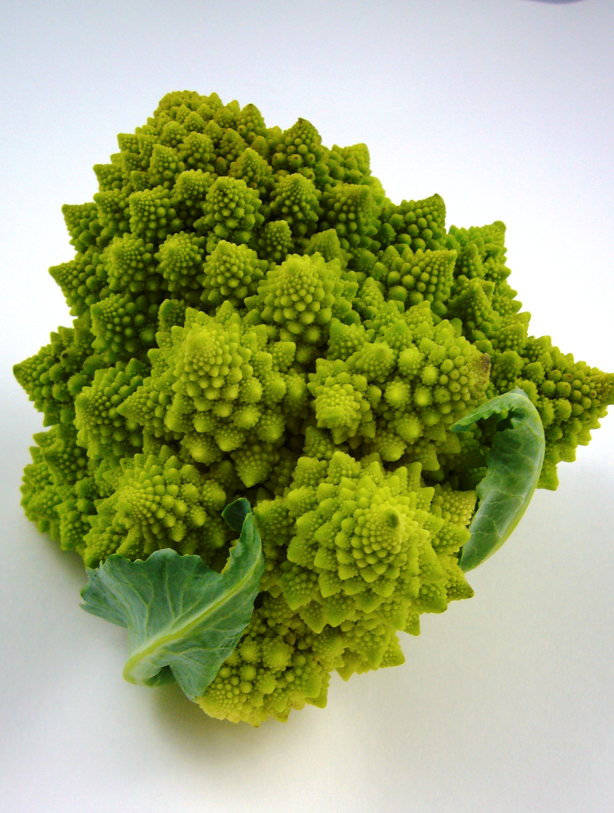

Vivimos rodeados de formas complejas que desafían las dimensiones clásicas y esquivan la geometría euclídea. La próxima vez que mires a tu alrededor, recuerda que la dimensión no sólo no es un número entero, sino que el universo parece decantarse por esos espacios intermedios.
¿Te gustaría saber más sobre fractales y dónde aparecen? Espera a la segunda entrega de esta servilleta.
Referencias
- B. B. Mandelbrot (1982). The Fractal Geometry of Nature. W. H. Freeman and Company, New York.
- 3Blue1Brown. (2017). Fractals are typically not self-similar. YouTube. https://www.youtube.com/watch?v=gB9n2gHsHN4
- Mates Mike. (2022). DIMENSIÓN FRACTAL: El Copo de Nieve de Koch. YouTube. https://www.youtube.com/watch?v=eKY_1j9VrEA

Comentarios
Enviar un comentario
¿Qué te ha parecido? Escríbenos tu comentario y lo revisaremos antes de publicarlo.